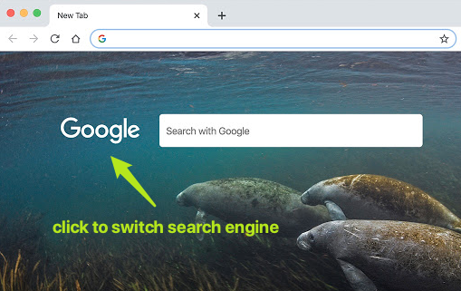
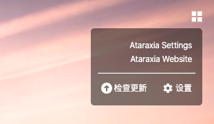

Welcome!
中文 | ENGLISHWelcome to Ataraxia New Tab.
Click logo to switch between different search engines.
Move to bottom right, click the < button to show previous wallpapers. After clicking 7 times it will turn back to current day.

Move to top right to show frequently visited websites or user defined links. You can also open Settings page here.
Customized settings:
- Add or delete search engines, or adjust the display order.
- Hide the search box to make the new tab super clear.
- Grant the permission to show frequently visited sites.
- Customize user-defined links.
Privacy & Permission Notice
- All your information is stored locally. We DO NOT upload any user data.
- The ONLY web request is downloading wallpaper from https://www.bing.com. We DO NOT request any other websites.
Any other questions? Seed Feedback